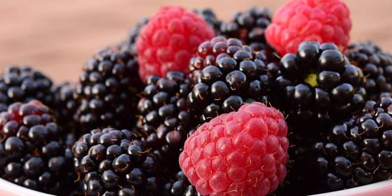

⊁1
Çilekler
Bu meyve antioksidan içeren meyveler arasında ilk on da yer almaktadır - bu, bileşiklerin hücreye zarar veren serbest radikalleri çok başarılı derece de yok eder . Bu antioksidanlardan biri, bağışıklık sistemini güçlendiren C vitaminidir ve bir bardak çilek dilimleri bir günde ihtiyacınız olandan daha fazlasına sahiptir. Meyvenin diğer doğal bitki kimyasallarından bazıları, iltihaplanma, belirli kanser türleri ve diyabet riskinizle mücadeleye yardımcı olmak için araştırmalarda kullanılmaktadır.
⊁2
Kirazlar !
Bardak başına üç gram lifle birlikte, tatlı kirazlar potasyum ve biraz da C vitamini içerir. Tüm meyveler ve sebzeler gibi, renk veren bitki kimyasalları da sağlık açısından faydalıdır. Kiraz da bulunan bu bileşikler meyveyi kırmızı, mor ve mavi renklendiren antosiyaninlerdir. Hücreleri hasardan koruyan antioksidanlar olarak çalışırlar. Quercetin denilen vişnelerde başka bir madde kalp sağlığını artırmaya yardımcı olabilir.
⊁2
Ahududu ! !
Bilimsel adı Rubus idaeus olan meyve kanser hücrelerinin ve tümör oluşumunun engellenmesinde çok önemli bir göreve sahiptir.Bu meyve çok narindir, bu yüzden onları satın aldıktan sonraki bir veya iki gün içinde yiyin ve yemekten hemen önce durulayın. Bir kase taze ahududu 8 gr lif, 186 mg of potasyum, 31 mg kalsiyum, 26 mcg folat, 32 mg C vitamini, 167 mcg lutein ve zeaxanthin içerir. Ahududu antioksidan ve antikanserojen etkileri olan Fenol, Flavon ve Flavonoid adlı maddeleri de içerir. Bu maddeler DNA moleküllerine zarar veren ve kansere sebep olan serbest oksijen radikallerini nötralize eder. Ayrıca kardiovasküler ve Alzheimer gibi hastalıklara karşı koruma sağlar.
⊁2
Yaban mersini
Bunları “beyin meyvesi” olarak düşünün.Yapılan araştırmalarda bir bardak Yaban mersini meyvesinin 145 gram geldiği ve 21 gram Karbonhidrat, 1 gram Protein, 0,5 gram yağ, 19 miligram C-VİTAMİNİ, 145 IU A- VİTAMİNİ ve 85 KALORİ içerdiği belirtilmektedir. Ayrıca, 100 gram yenilebilir Yaban mersininin %83ünün su, %0.7sinin protein, %0.5'inin yağ, %15inin karbonhidrat, %1.5'unun lif olduğu ve 62 kalori sağladığı saptanmıştır. Mineral ve vitaminlerce zengin olan yaban mersini sodyum içermezken potasyum içeriği son derece yüksektir.Yaban mersininden hergün bir-iki su bardağı kadar yemek gerekir. Yaban mersini içinde polifenoller, salisilik asit, karaotenler, lif, folik asit, C vitamini, B vitamini, potasyum, manganez, mağnezyum, demir, riboflavin, niasin, fitoöstrojenler vardır. İçinde bu kadar faydalı besin içeren çok az gıda vardır. Maviyemişin sadece bir porsiyonu beş porsiyon kadar havuç, elma , brokoli ve balkabağı kadar antioksidan madde içerir. Yarım su bardağı yaban mersini 1733 ünite E vitamini, 1200 mg C vitamini içerir.
⊁2
Karpuz
Bu sulu yaz meyvesi bazen besin açısından hafif bir meyve olarak bilinir. Ancak karpuzun, C vitamini kadınların her gün ihtiyaç duyduğu üçte biri gibi, ayrıca her iki bardak küp kavun porsiyonunda 100 kaloriden daha az olan potasyum ve A vitamini gibi bazı önemli istatistikleri vardır. Karpuz, kırmızı rengini, bazı kanserleri inhibe etme ve cildinizi UV ışınlarından korumaya yardımcı olma kabiliyeti için çalışılmış bir antioksidan olan likopen'den alır. Ayrıca canlandırıcı ve nemlendiricidir.. Karpuz Meyvesinin “şeker oranı çok yüksek” olduğunu duydunuz mu? Bu doğru fakat yapay şeker değil doğal şeker (meyve şekeri). Meyvenin tamamındaki doğal şeker ayrıca lif, vitamin, mineral, nemlendirici su ve az kalorilidir. Yani b tadını çıkararak yiyebilirsiniz Kilo aldırmaz.
three Fitness Blog